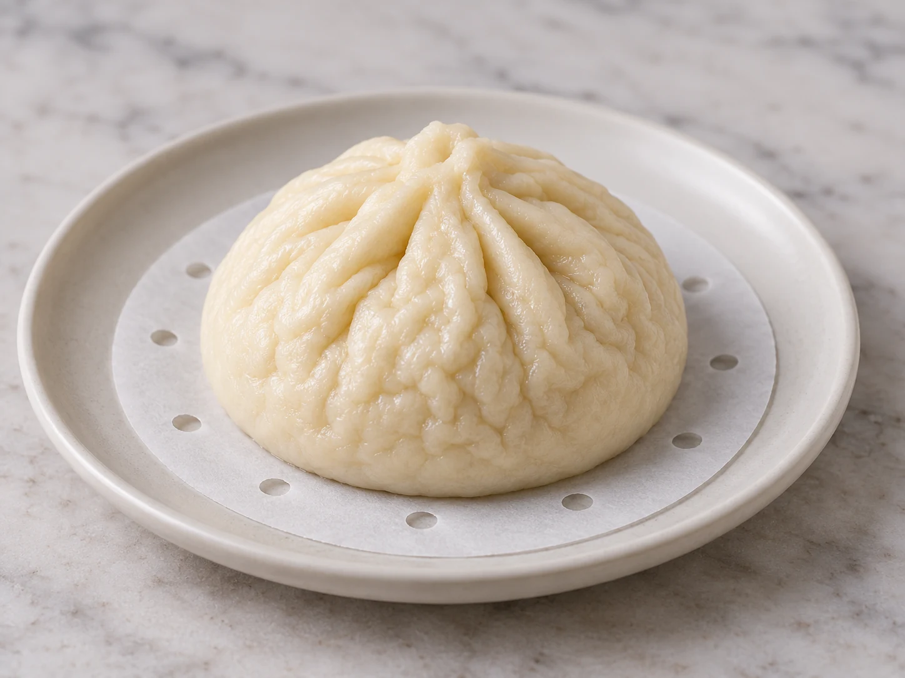

Steamed buns wrinkled? Check these 3 causes.
Look at the wrinkle itself before blaming the recipe. Did the bun also lose volume? Is the skin wet or pitted? Or is it dry and puckered with no obvious moisture?
Find my most likely cause — free →
Do not change anything yet.
The final symptom is not the cause. Use the details you can actually observe to narrow the next test.
Wrinkled does not mean one thing.
Wrinkled + volume loss
If the bun also flattened or lost lift, over-proofing becomes a stronger candidate. Red House Spice documents a direct comparison where longer proofing produced a wrinkled, collapsed mantou. If volume loss is the main symptom, compare it with the bao collapse after steaming guide.
Wrinkled + wet or pitted
Moisture changes the branch. Condensation dripping from a metal lid can damage the surface, and a bamboo steamer or cloth-wrapped lid can reduce direct droplets.
Dry wrinkles without volume loss
This is weaker evidence. Surface drying or another process factor may matter, but the current MVP should label this NEEDS MORE INFO instead of naming a confident cause.
If moisture is obvious, change only the anti-drip setup. If volume loss is obvious and pre-steam proof cues were very puffy/fragile, compare an earlier proof endpoint.
Evidence: Red House Spice — over-proofed wrinkling/collapse; King Arthur Baking — condensation control.
Compare a smooth reference with wrinkled bao
Use the surface image only to identify what happened. The same wrinkle can have more than one cause, so pair the photo with proof state, moisture and volume change.

| Visual clue | Check next | One-variable trial |
|---|---|---|
| Wrinkles plus a clear loss of height | Was final proof very puffy or fragile? | If yes, compare an earlier proof endpoint |
| Wet, pitted wrinkles on the top | Did condensation drip from the lid? | Reduce direct droplets while keeping the recipe stable |
| Dry puckering, no volume loss | Was the shaped surface drying before steaming? | Document that exposure before changing ingredients |
Illustrative references, not a controlled before-and-after experiment.
Quick answers
Does wrinkling always mean over-proofing?
No. Wrinkling plus volume loss and strong over-proof cues is more informative than wrinkling alone.
Can condensation wrinkle steamed buns?
Direct lid droplets can leave wet, pitted, or damaged surfaces, so visible moisture should move condensation higher in the diagnosis.
What if the skin is wrinkled but dry?
That is weaker evidence. Record proof state and whether the shaped skin dried before steaming, then change one variable at a time.
Let the next batch answer one question.
Bao Rescue asks a few observable questions, ranks the live cause families, and gives one next-batch test instead of a long list of generic fixes.
Start free diagnosis →